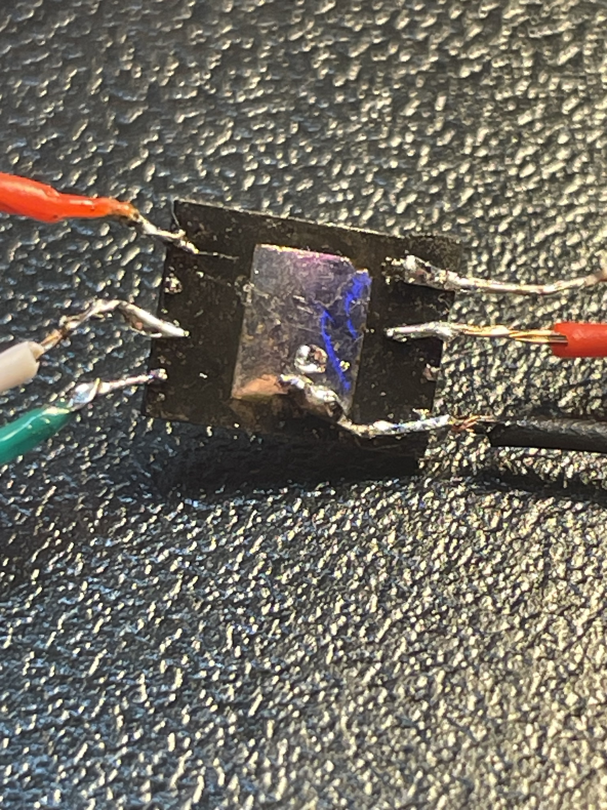
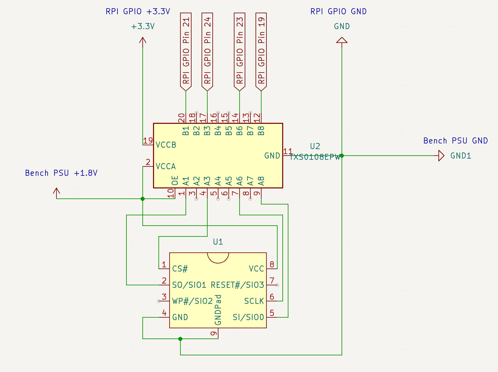

So, it was October, 2023, and a thought had arisen; dump the external flash on the Band 2. Was it a good one? Dunno—but who’s to say that it’s not? The plan was simple. Buy a broken Band, take it apart, grab the chip, and dump it!
By the end of October, I had finally ordered the Band 2, which would never see the light of day again. Just a few short days later, on November 4th, the Band arrived. I plugged it in and let it sit on charge for 3 hours, but it never got past the charging screen. There’s a reason why it was cheap. It probably fell victim to the infamous Band Gate. So, I took off the screen, disassembled the Band, and just stopped there.
About 10 days later, I started working on the PCB design. My original plan was to use a custom PCB to break out the pins of the chip to some 2.54mm pin headers, so that I didn’t have to do any microsoldering. I put a lot of time into the PCB design, because I’d never used PCB design software before this. After working on it, the PCB was ready to be sent off to PCBWay for manufacturing on November 10th. Unfortunately, when they arrived, I quickly realized that I’d sent PCBWay an earlier revision of the board. I used this as an opportunity to make a few more revisions to the board, suggested by some friends.
Finally, a whole month later, the 2nd batch of boards arrived. I assembled one of them a few hours later—just to go on another break.
PCB revision 1
PCB revision 2
PCB revision 3
About a week later, I got my board out, as well as the BGA stencil that I ordered with it. Little did I know, none of this would be useful. I melted the solder around the flash chip with a heat gun, pulling it off the board, expecting a tiny 5 by 5 array of pads; only to be met with a set of 8 pins and a massive grounding pad in the middle. It wasn’t BGA, it was WSON-8. I should’ve known, and it was my fault that I didn’t. I made the PCBs before I had the tools to remove the chip, so we all assumed it was BGA. But I had to keep going, I was getting close.
So, I went back into KiCad, recreated the chip footprint, symbol, and board schematic. I was back to the drawing board. Luckily, with my prior experience in the software, I was able to create a new board in just one hour. But, after creating the new PCB, I thought to myself: “Is it worth dropping even more money?” And to that, I said no. Several people in the past suggested the “deadbug” technique, but I originally didn’t agree due to my lack of soldering skills; however, it was my only other option.
With a new direction in mind, I prepared to solder wires to pads that were only fractions of a millimeter thick. I stripped a USB cable for its thin wires, took note of the colors, and soldered them to the correct pads on the chip. Some how, I was successful on my first attempt. The connections were solid. With the chip ready to go, I quickly assembled a logic level shifter, and then wired everything up on a breadboard.

The connections made to the flash chip
All along, I planned to use an Arduino to control the chip. The Arduino’s GPIO would be wired up to a level shifter, which would then connect it to the chip with the correct voltage. Once I wired the whole thing together, a friend pointed out that the level shifter was upside down. VCC_A (low) was on the high side, and vice-versa. But, at this point, I’d already tried to interact with the chip, which obviously yielded no results. Given my mistakes, I thought that the chip was dead. I fixed the circuit anyway, and had more of the same—nothing. But, just as I was about to give up, I remembered that I had a Raspberry Pi.
I quickly disassembled the circuit, even as far as removing the wires from the chip. I wanted to have one last fresh go at this thing. So, I did some research about the RPi’s GPIO, figured out which pins go where, and rebuilt the breadboard; including resoldering the wires to the chip. This was my last chance. I cloned and compiled a tool called flashrom, which allowed me to dump the chip.
I ran the tool, only to find “No EEPROM/flash device found” printed in the console. I took a quick look at the wiring, and noticed a wire on my desk, not plugged into anything. I quickly realized that the wire was supposed to connect VCC_A to OE, pulling it high, allowing the TXS0108E level shifter to transfer signals. After connecting OE to VCC_A, I ran the command once more, to be met with “Found Macronix flash chip “MX25U51245G” (65536kB, SPI)” printed to the console. I could not believe my eyes. The chip was alive.
However, the model that the program gave was wrong. I was using an MX66U51235F. I assumed that the program didn’t support my exact flash chip, so it found one of similar spec. Regardless of the mismatch, I proceeded to pass the read command. It started reading…and it never stopped. It was stuck. Sure enough, the flash chip that the program was substituting for was a 4-byte-only chip. This meant that the program was trying to use the standard 0x03 read command, but was attempting to pass in 4 bytes of address data, which my chip simply didn’t support. To read from 4-byte addresses on my chip, you need to use 0x13. With this in mind, I searched the source code for anything starting with MX66, and sure enough, it supported the MX66L51235F, my chips’ close cousin. These two chips are almost the exact same, besides a few differences, with the biggest being the voltage that the chip ran at. My chip ran at 1.8V, while the MX66L ran at 3V. However, since the chip uses SPI, it doesn’t matter what voltage the chip runs at. 0s and 1s are still 0s and 1s.
With this in mind, I forced the program to treat my chip as an MX66L51235F. Finally, after all the time and work, a 65,536KB file was written to my Raspberry Pi’s SD card. I read it again at a slower speed and compared the two file hashes, just to verify the file and eliminate the chance of read artifacts. The journey was over. We did it! Hopefully, with this new file, we should be one step closer to writing an emulator for the Microsoft Band. Just know that this project is not over; dumping the internal PFlash is next up on the list.
./flashrom -p linux_spi:dev=/dev/spidev0.0,spispeed=10000 -r dump -c "MX66L51235F/MX25L51245G" -f
# -p: Programmer
# linux_spi: device location
# spispeed: 10000 KHz, 10 MHz
# -r : read to
# -c: forced chip type
# -f: force (here, command used to read regardless of potential imcompatibilities)

The wiring diagram of the circuit
+-------------------+---------------------+------------------------+ | Chip pin | Level Shifter pin | Raspberry Pi GPIO pin | +-------------------+---------------------+------------------------+ | CS# | 3 | 24 | | SCLK | 6 | 23 | | SO | 1 | 21 | | SI | 8 | 19 | | GND/GNDPad | N/A | 30 | | VCC | N/A | N/A | +-------------------+---------------------+------------------------+
Logic level shifters are simple ICs that step up or down signals to match the voltage on each side. On this specific chip, the TXS0108E, VCC_A must be less than or equal to VCC_B. Besides VCC and data, the chip has two other inputs, OE (Output Enable), and (Common Ground). We’ll talk about how those are connected later. For now, let’s have a look at the 4 standard data wires that SPI uses.